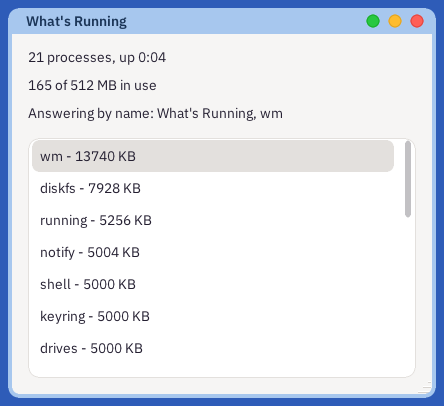
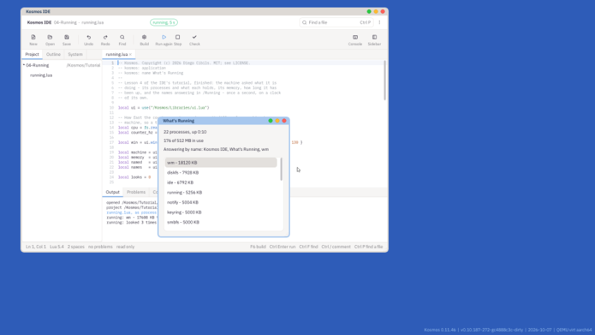

A window that asks the machine what it is doing - its processes and what each one holds, its memory, how long it has been up - and asks again every second. On the way: the system's servers, which you reach by name; the counter, which tells the time; and why a window asks on a clock of its own rather than whenever it draws.

What you will have at the end of this lesson.
New, New Project, Lua app, the Hello Window template, and the name Running. Delete everything after the line that uses the UI kit.
local machine = ui.label{ x = 16, y = 14, w = 388, text = "" }
local memory = ui.label{ x = 16, y = 42, w = 388, text = "" }
local named = ui.label{ x = 16, y = 70, w = 388, text = "" }
local names = ui.list{ x = 16, y = 104, w = 388, h = 240, items = {} }
A list shows rows of words, and scrolls when there are more than fit. Its items can be replaced whenever the program likes; the list draws what it was last given.
local alive = {}
for _, p in ipairs(sys.processes() or {}) do
if not p.exited then alive[#alive + 1] = p end
end
table.sort(alive, function(a, b) return (a.held or a.pages or 0) > (b.held or b.pages or 0) end)
sys.processes() asks Nebula, the kernel, for its table of processes: a name, an id, how many pages of memory each holds, and more. Any program may ask. Knowing that a process exists is not being able to reach it - to talk to one, you need to have been given a way to, and Notes in lesson 3 was given /Home and nothing else.
A page is 4 KB, so each row is its name and its pages times four, the largest first.
local m = fs.read("/Devices/memory")
if m then
memory.text = ("%d of %d MB in use"):format(m.total_mb - m.free_mb, m.total_mb)
end
/Devices is not a folder on a disk. It is a server - a program written in C - that answers questions about the machine, and fs.read is a message to it. What comes back is a table: total_mb and free_mb here. /Devices/cpu answers with the processor's architecture, its cores and how fast its counter counts.
local running = fs.list("/Running") or {}
named.text = "Answering by name: " .. table.concat(running, ", ")
/Running holds the names of the programs that answer messages of their own - Astra's window manager, wm, and every application with a window, this one among them.
local cpu = fs.read("/Devices/cpu") or {}
local counter_hz = cpu.counter_hz or 62500000
local up = sys.ticks() // counter_hz
sys.ticks() reads the processor's counter, which has counted since the machine started. How fast it counts depends on the machine - 62.5 million a second in QEMU, 24 million on a Mac's own cores, a few thousand million on a PC - so a program reads the rate from /Devices/cpu once, and divides. A number of ticks on its own means nothing; ticks and their rate are a time.
local clock = ui.view{ x = 0, y = 0, w = 0, h = 0 }
function clock:tick() look() end
win:add(clock)
A view with a tick is called once a second by its window, between everything else the window does. This one has no size and draws nothing; it is only the clock. look asks everything again and says the window is dirty, and the window draws what it now knows.
Why not ask while drawing? Because a window draws whenever it must - when it is uncovered, when the pointer passes over a button - and a question to a server may have to wait for its answer. A window that waits while it draws is a window that stops answering the person in front of it. So in Kosmos a window draws only what it already knows, and asks on a clock of its own.
Press F5. Start something else from the Deskbar and watch it appear in the list a second later; close it and watch it go.

What's Running beside the IDE.
The finished lesson is in Lesson's Project, under the three dots: 04-Running.
threads as well as pages./Devices/cpu has cores.Nebula, the kernel, knows about threads, memory, messages and capabilities, and nothing else - there is no file system, no network and no screen in it. Everything else is a server: /Devices for the machine, /Home for your files, Astra for the screen. Each is an ordinary process, in the list your window shows, and each answers messages. When one stops, the others go on.
Process Viewer is this window grown up: each process's share of the processors, its threads and its memory, and a way to stop one. Open the IDE's System tab, then /Kosmos/Apps, then procs.lua, and look for sampler:tick.